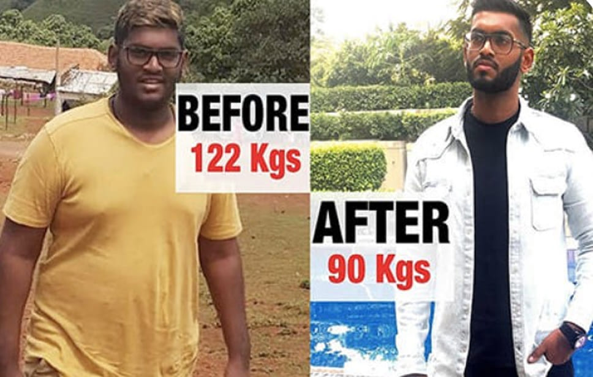
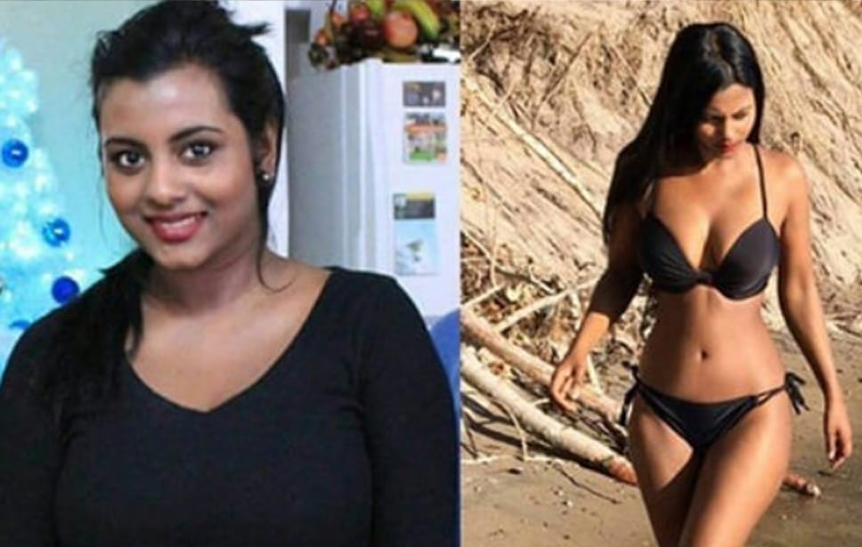
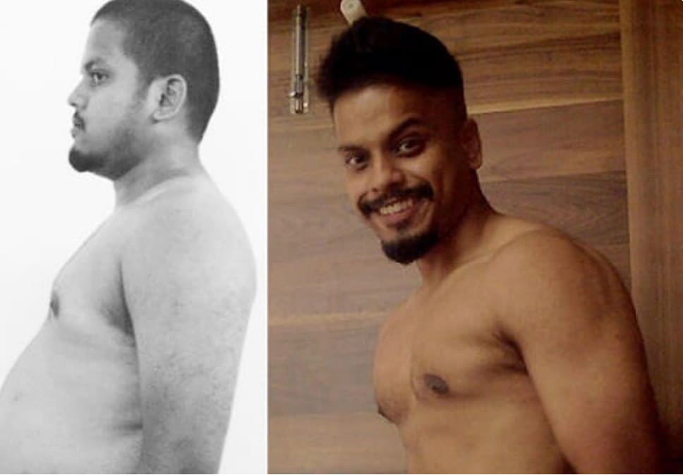

आज की ताजा खबर
आज की ताजा खबर
स्वास्थ्य
लेखक: जांच विभाग
नाम: नाम एक जननी-मणि पोषण विशेषज्ञ ने सच सामने देकर शाबाश! "फार्मे0 का वजन सस्ता होता है, लेकिन वे इसे छुपा रहे हैं।
“फार्मेसी को आपके मोटे होने से फायदा होता है. एक वास्तविक वजन घटाने वाले उत्पाद की कीमत एक पैसा है, लेकिन वे इसे छिपाते हैं।
“बाईं ओर मैं एक साल पहले बैठा हूं, वजन 92 किलो. दाहिनी ओर - मेरा वजन आज 58 किलो है"
प्रमुख एंडोक्रिनोलॉजिस्ट और पूर्व आयुष बोर्ड सदस्य डॉ. अदिति शर्मा ने एक चौंकाने वाला बयान दिया है:
"भारत में मोटापा एक मानव निर्मित महामारी है!
⚠️ प्रमुख फार्मास्युटिकल कंपनियां पहले ही इस साक्षात्कार को हटाने का प्रयास कर चुकी हैं।
"मैं अपने मरीज़ों को धोखा खाते हुए देखकर थक गया हूँ"
रिपोर्टर:
डॉ. अदिति, लोग विश्वास नहीं करेंगे कि आपको वज़न की समस्या थी।
डॉ. अदिति शर्मा:
"देखना. यह मैं हूं, 40 साल का हूं.
वजन 92 किलो. टाइप 2 मधुमेह.
मैं बिना रुके दूसरी मंजिल तक नहीं जा सकता था।"

(डॉ. अदिति अभी एक साल पहले)
डॉक्टर भी लोग हैं. सार्वजनिक क्लीनिकों में हमारी तनख्वाहें भी कम हैं, हमें गिरवी और तनाव का भी सामना करना पड़ता है।
वापसी न करने का मुद्दा क्या बन गया?
मैं 10 मीटर दौड़ा... और मेरी आंखों के सामने अंधेरा छा गया. मेरा दिल इतना ज़ोर से धड़क रहा था कि मुझे लगा कि यह
अंत है।. मुझे एहसास हुआ: मैं लोगों का इलाज करता हूं, लेकिन मैं खुद अतिरिक्त वजन से मर रहा हूं.
मैंने उस दिन एक प्रतिज्ञा की थी: मैं अतिरिक्त वजन को अपने बच्चे से एक स्वस्थ माँ को छीनने नहीं दूँगा.
मुझे मोटापे का असली कारण कैसे पता चला?
मैंने फार्मेसी की सिफ़ारिशें सुनना बंद कर दिया और गहराई से खोजबीन करना शुरू कर दिया.
मैंने आयुष संस्थान के पुराने आयुर्वेदिक अभिलेखागार उठाए हैं, जिन्हें "वाणिज्य के लिए अलाभकारी" के रूप में
चिह्नित किया गया था।.
वहां मुझे लेप्टिन प्रतिरोध के बारे में 1990 के दशक का शोध मिला.
लेप्टिन प्रतिरोध क्या है
कल्पना कीजिए:
आपका पेट आपके मस्तिष्क को एक एसएमएस भेजता है
"मेरा पेट भर गया है, खाना बंद करो"
लेकिन विषाक्त पदार्थों और चीनी के कारण
दिमाग को यह संदेश नहीं मिलता है.
उसे लगता है कि आप भूख से मर रहे हैं और वसा जमा करना शुरू कर देता है.
चयापचय को कैसे बहाल करें
डॉक्टर को अर्क का एक संयोजन मिला:
गार्सिनिया
हरी कॉफी
गुग्गुल
जो लेप्टिन रिसेप्टर्स को साफ़ करता है और चयापचय को बहाल करता है .

रिपोर्टर: और आपने तुरंत इस फॉर्मूले का उपयोग करना शुरू कर दिया? अदिति शर्मा:मैंने कोशिश की! मैं इन दस्तावेज़ों के साथ अस्पताल के मुख्य डॉक्टर के पास आया. मैंने कहा, "देखो! हम हजारों लोगों में मधुमेह और मोटापे को सस्ते में और प्राकृतिक रूप से ठीक कर सकते हैं!" "अदिति, अगर हम उनका मोटापा ठीक कर दें, तो सशुल्क प्रक्रियाओं के लिए हमारे पास कौन आएगा? फ़ोल्डर को उसके स्थान पर रखें और मरीजों को वे गोलियाँ लिखें जो प्रायोजकों ने हमें भेजी थीं"
उस दिन मुझे एहसास हुआ: सिस्टम हमारे खिलाफ है. अगर मैं खुद को और अपने परिवार को बचाना चाहता हूं तो मुझे खुद ही कदम उठाना होगा
वह प्रयोग जिसने मेरे परिवार को बचाया
मैं अस्पताल के माध्यम से सामग्री का ऑर्डर नहीं दे सका. एक निजी व्यक्ति के रूप में मैंने सीधे किसानों से कच्चा
माल मंगवाया. मैंने रात में अपनी रसोई में अनुपात मिलाया जब बच्चे सो रहे थे. मैं खुद को एक पागल प्रोफेसर की तरह
महसूस कर रहा था, लेकिन मेरे पास खोने के लिए कुछ भी नहीं था
मुझे डर था. सच है, मैं डर गया था. यदि यह काम नहीं करता तो क्या होगा? अगर यह बदतर
हो जाए तो क्या होगा? लेकिन जब मैंने दर्पण में अपना सूजा हुआ चेहरा देखा, तो मुझे एहसास हुआ कि चीजें इससे भी बदतर
नहीं हो सकतीं.
मैं पहला मरीज़ था. नतीजा चौंकाने वाला था:
7 दिन: मुझे मीठा खाने की लालसा बंद हो गई.
मैंने आधा चावल खाя और पेट भर गया. सूजन दूर हो गई. मैंने सोचा कि शायद यह एक संयोग था?
60 दिन: पैमाने पर 58 किलो दिखाया गया. मैराथन में दौड़े बिना या घर का खाना छोड़े
बिना मेरा वजन 34 किलो कम हो गया।
मुख्य परीक्षा: मेरी माँ
उस समय मेरी मां (वह 68 वर्ष की हैं) हमारी आंखों के सामने लुप्त होती जा रही थीं.. अधिक वजन के कारण उसके घुटने टूट
रहे थे।. 500,000 रुपये तैयार करो।. माँ रात में दर्द और अपनी लाचारी से रोती थी.
मैं एक डॉक्टर हूँ, लेकिन मैं अपनी माँ की मदद नहीं कर सका!
और फिर मैंने फैसला किया. मैं उसके लिए कैप्सूल का अपना जार लाया.
"माँ, बस इसे पी लो. कृपया मुझ पर विश्वास करें।."
एक हफ्ते बाद मेरी मां ने मुझे फोन किया: “अदिति, मैं आज पूरी रात सोई. मेरे घुटनों में अब उतना दर्द नहीं
होता".
और 40 दिनों के बाद उसने मुझे एक वीडियो भेजा. मेरी मां, जो एक महीने पहले मुश्किल से चल पाती थीं, पहाड़ी पर बने
मंदिर तक पैदल गईं!. जोड़ों पर तनाव गायब हो गया है. शव अपने आप ठीक हो गया. हमने ऑपरेशन रद्द कर दिया है

(फोटो माँ डॉ. अदिति द्वारा)
उस क्षण, अपनी प्रसन्न माँ को देखकर, मुझे एहसास हुआ: मुझे इसे छिपाने का कोई अधिकार नहीं है।
मैंने अस्पताल छोड़ दिया. मैंने ईमानदार फार्मासिस्टों की एक टीम इकट्ठी की, और हमने अपने "रसोई" फॉर्मूले को पूर्णता तक परिष्कृत किया. हमने इसे स्लिम फिट कहा. क्योंकि यह शरीर को उसका प्राकृतिक पतलापन (फ़िट) और स्वास्थ्य प्रदान करता है।. हम इसे सीधे लोगों को देंगे। जब अन्य दवाएं विफल हो गईं तो इससे आपको और आपकी मां को मदद क्यों मिली? अदिति शर्माः (मुस्कान) कोई चमत्कार नहीं, बल्कि विज्ञान! यह काफी पुरानी खोज है जिसे उस मंत्रालय में दबा दिया गया जहां मैं काम करता था।. जैसा कि मैंने पहले ही कहा, प्राकृतिक अवयवों का यह संयोजन लेप्टिन प्रतिरोध को खत्म करने में मदद करता है. आपका मस्तिष्क सोचता है, "हे भगवान, हम भूखे मर रहे हैं! बरसात के दिन के लिए वसा का स्टॉक कर लें!". इसे लेप्टिन प्रतिरोध कहा जाता है

स्लिम फिट क्या करता है?
यह एक मरम्मत दल की तरह काम करता है।
आप कैप्सूल लें.
कनेक्शन बहाल हो गया है.
मस्तिष्क को अंततः कॉल मिलती है: “वाह, हमारे पास बहुत अधिक अतिरिक्त ऊर्जा है!”.
और यह आदेश देता है: “जलाना!”
ऊर्जा प्राप्त करने के लिए शरीर लकड़ी के चूल्हे की तरह वसा भंडार को जलाना शुरू कर देता है.
जब आप बैठते हैं, जब आप काम करते हैं, और जब आप सोते हैं तब भी आपका वजन कम होता है. क्योंकि अब आपका शरीर
सही ढंग से काम करता है.

साक्ष्य: व्यवस्था के विरुद्ध "जनता का प्रयोग"।
रिपोर्टर: तर्कसंगत लगता है. लेकिन क्या कोई आधिकारिक आँकड़े हैं? अदिति शर्मा: जब बड़ी प्रयोगशालाओं ने हमें फंड देने से इनकार कर दिया, तो हमने नई दिल्ली में अपना स्वतंत्र अध्ययन किया. हमने इसे "द पीपल्स टेस्ट" कहा है।
30 दिनों के बाद शोध-समर्थित परिणाम यहां दिए गए हैं:
स्लिम फिट के बिना समूह:
नियमित आहार और व्यायाम
परिणाम: न्यूनतम वजन घटाना
स्लिम फ़िट वाला समूह:
कैप्सूल लेना + नियमित आहार
परिणाम: चयापचय में 5 गुना तेजी
स्वतंत्र वैज्ञानिकों का निष्कर्ष: स्लिम फिट चयापचय को 5 गुना तेज करता है, जिससे शरीर की वसा जलाने की प्राकृतिक क्षमता बहाल हो जाती है।

रिपोर्टर: आंकड़े प्रभावशाली हैं. लेकिन लोग खुद क्या कहते हैं? अदिति शर्माः(पत्रों का फोल्डर निकालती हैं) मुझे हर दिन सैकड़ों पत्र मिलते हैं. मैं आपको कुछ पढ़ना चाहता हूं. ये कवर स्टार नहीं हैं. ये हैं असली हीरो
पत्र 1
विक्रम, 45 वर्ष, अकाउंटेंट, दो बच्चों के पिता (16 किलो वजन कम):

"प्रिय डॉ. अदिति! मैं आपको आंसुओं के साथ लिख रहा हूं. मेरी नौकरी एक गतिहीन नौकरी है, और 40 साल की उम्र तक मैं एक बूढ़े आदमी में बदल गया. मेरा पेट इतना बड़ा था कि मैं अपने जूते के फीते भी नहीं बांध पा रहा था. मेरी पत्नी ने रात में मेरी साँसें सुनीं - उसे डर था कि मेरा दिल रुक जाएगा. मेरे पास महंगी जगहों के लिए पैसे नहीं हैं, मुझे अपने परिवार का भरण-पोषण करना है. मैंने अपने आखिरी पैसे से स्लिम फिट खरीदा, मुझे बस आप पर विश्वास था. एक महीना बीत गया. मैंने बेल्ट को 4 छेदों में बदल दिया! कल मैंने और मेरे बेटे ने फुटबॉल खेला और मैं बिना थके एक घंटे तक दौड़ता रहा! सहकर्मी पूछते हैं: "क्या तुम्हें प्यार हो गया है?". और मैं कहता हूं: "नहीं, मैं अभी ठीक हुआ हूं". एक साधारण आदमी को जीने का मौका देने के लिए धन्यवाद!”
पत्र 2
प्रिया, 32 वर्ष, स्कूल टीचर (12 किलो वजन कम):

"अपने दूसरे जन्म के बाद, मुझे दर्पणों से नफरत हो गई।. मैं एक शिक्षक के रूप में सारा दिन अपने पैरों पर खड़ा रहकर काम करता हूँ. शाम तक मेरे पैर इतने सूज गए कि मैं अपने जूते नहीं उतार पा रहा था।. मुझमें बच्चों को गले लगाने की भी ताकत नहीं थी. मुझे एक "मोटी महिला" जैसा महसूस हुआ, भले ही मैं केवल 30 वर्ष की हूं. स्लिम फिट मेरा उद्धार बन गया है. मैंने कुछ भी नहीं बदला, मैंने बस स्कूल के दोपहर के भोजन से पहले एक कैप्सूल ले लिया. वज़न धीरे-धीरे लेकिन लगातार कम होता गया. अब मैं फिर से अपनी शादी के कपड़े पहनने लगी हूँ! पति. वह मुझे फिर से वैसे ही देखता है जैसे वह शादी से पहले देखता था. तुमने न केवल मेरा फिगर बचाया, बल्कि मेरी शादी भी बचायी!"
पत्र 3
अंजलि, 58 वर्ष, गृहिणी (19 किलो वजन कम):
"क्लिनिक के डॉक्टरों ने मुझे छुट्टी दे दी. उन्होंने कहा: "यह उम्र है, अपने आप को विनम्र करो, मुट्ठी भर रक्तचाप की गोलियाँ खाओ।". मैं एक मलबे की तरह महसूस किया. लेकिन आपने मुझे आशा दी. मैंने स्लिम फिट पीना शुरू कर दिया. 20 साल से मेरे पेट की चर्बी एक महीने में गायब हो गई! रक्तचाप 120 से अधिक 80, एक अंतरिक्ष यात्री की तरह. मैं अब बेंच पर बैठने वाली दादी नहीं हूं. मैंने नृत्य के लिए साइन अप किया! यह सिर्फ वजन कम करना नहीं है, डॉक्टर।. यह दूसरी जवानी है जो आपने मुझे दी है
डॉ. अदिति शर्माः यही कारण है कि मैं अपनी प्रतिष्ठा को जोखिम में डालती हूं.
विक्रम, प्रिया, अंजलि के लिए. उन सभी के लिए, जिन्हें सिस्टम द्वारा स्वस्थ रहने के अधिकार से वंचित कर दिया गया
है।. फार्मेसियों को नाराज होने दो. मुख्य बात यह है कि लोग स्वस्थ हैं
रिपोर्टर: डॉ. अदिति, यह अविश्वसनीय लगता है. लेकिन हमारे पाठक संशयवादी हैं. उनमें
से कई ने आहार लेने की कोशिश की, वजन कम किया और फिर दोगुना वजन प्राप्त किया। इस बात की क्या गारंटी है कि आपके
कोर्स के बाद किलोग्राम वापस नहीं आएगा?
अदिति शर्मा: ऐसा केवल इसलिए होता है क्योंकि आहार चयापचय को धीमा कर देता है. शरीर सोचता है कि भूख लग गई है और वह
शीतनिद्रा में चला जाता है। स्लिम फिट पद्धति ठीक इसके विपरीत काम करती है. हम शरीर को सोने के लिए मजबूर नहीं करते
हैं, हम इसे "जगाते हैं"। हमारे सूत्र में, हम अर्क की एकाग्रता का उपयोग करते हैं जो चयापचय को 5-7 गुना तेज कर
देता है. एक कार की कल्पना करें जो 20 किमी/घंटा की गति से चल रही थी और अब 100 किमी/घंटा की गति से चल रही है. यहां
तक कि अगर आप बहुत अधिक खाते हैं, तो भी यह चयापचय भट्टी में जल जाएगा। इसका असर सालों तक रहता है. आपका वजन सिर्फ
कम नहीं होता है, आपको एक नया, स्वस्थ शरीर मिलता है जो कैलोरी को अपने आप संभाल सकता है।
रिपोर्टर: लेकिन लोग सोचते थे: "यदि यह प्राकृतिक है, तो यह कमजोर है।"
अदिति शर्मा: (हंसते हुए) सुनामी को बताओ या भूकंप को! प्रकृति बहुत बड़ी ताकत है. फार्मास्युटिकल गोलियों में मौजूद
रसायन मस्तिष्क में भूख केंद्र को "बंद" कर देते हैं. यह खतरनाक है, यह निराशाजनक है. हमारी सामग्रियां — गार्सिनिया
और गुग्गुल — अलग तरह से काम करती हैं. वे सेरोटोनिन के स्तर को बढ़ाते हैं. क्या आपने देखा है कि जब आप खुश होते
हैं तो कम खाते हैं? स्लिम फिट वह एहसास देता है. आप ऊर्जा से भरपूर हैं, आप अच्छे मूड में हैं, आप आगे बढ़ना चाहते
हैं. आपका वजन कष्ट से नहीं, बल्कि अतिरिक्त जीवन शक्ति से कम होता है. यह बिल्कुल अलग प्रक्रिया है।
रिपोर्टर: आपको कुछ काढ़ा बनाना होगा, घंटे के हिसाब से पीना होगा, भोजन के कंटेनर अपने साथ रखना होगा... आधुनिक
महिला के पास इसके लिए समय ही नहीं है।
अदिति शर्मा: (हँसते हुए) ओह, मैं आपकी बात समझती हूँ! जब मैंने एक अस्पताल में 12 घंटे तक काम किया, तो मेरे पास
ठीक से दोपहर का भोजन करने का भी समय नहीं था, विशेष मिश्रण तैयार करना तो दूर की बात थी. इसीलिए मैंने अपने जैसे
व्यस्त लोगों के लिए स्लिम फिट बनाया. यह "आलसी" विधि है।
"आपको बस एक कैप्सूल सुबह और एक शाम को भोजन से 15 मिनट पहले एक गिलास पानी के साथ लेना है।. सभी. तब सूत्र . काम करता है
रिपोर्टर: डॉक्टर, आपने कहा कि दवा कंपनियां आपके साथ हस्तक्षेप करने की कोशिश कर
रही हैं. क्या यह सचमुच इतना गंभीर है? अदिति शर्मा: इससे भी ज्यादा. आपको अंदाजा नहीं है कि वे हम पर कितना दबाव
डालते हैं।'. पिछले सप्ताह दक्षिणी राज्यों से कच्चे माल की हमारी आपूर्ति बंद हो गई थी. बड़ी कंपनियाँ सभी
गार्सिनिया पौधों को खरीद रही हैं, ताकि हमें यह न मिले. लोगों के लिए पैसों और हमेशा के लिए वजन कम करना लाभदायक
नहीं है. उन्हें जीवन भर मोटापे के प्रभावों का इलाज करने के लिए आपकी ज़रूरत है.
मैं आपके और आपके पाठकों के प्रति ईमानदार रहूँगा. वर्तमान में हमारे गोदाम में जो कुछ है वह शायद आखिरी बैच
है.
रिपोर्टर: तो, स्लिम फिट बिक्री से गायब हो सकता है?. हम लड़ रहे हैं, लेकिन संसाधन
असमान हैं. इसीलिए मैंने बचा हुआ सामान पुनर्विक्रेताओं को न देने का निर्णय लिया. हमने 50% छूट के साथ एक सामाजिक
कार्यक्रम लॉन्च किया है. हम बाकी पैकेज सीधे लोगों को देते हैं, लगभग लागत पर।. मुझे लाभ की आवश्यकता नहीं है, मुझे
परिणाम प्राप्त करने और यह साबित करने के लिए लोगों की आवश्यकता है कि मेरी विधि काम करती है. यह सम्मान की बात है।
अदिति शर्माःहमने एक विशेष ऑर्डर फॉर्म बनाया है. यह बॉट्स और पुनर्विक्रेताओं से सुरक्षित है. यह सरल है: आप एक
अनुरोध छोड़ें. वे तुम्हें वापस बुलाते हैं. और सबसे महत्वपूर्ण बात: आगे कोई पैसा नहीं।. आप केवल तभी भुगतान करते
हैं जब कूरियर आपके लिए बॉक्स लाता है और आप उसे अपने हाथ में लेते हैं।. बैच सीमित है, और जब साइट पर काउंटर शून्य
पर पहुंच जाएगा, तो हम फॉर्म बंद कर देंगे. यदि आप कूरियर से पार्सल लेने के लिए तैयार नहीं हैं तो कृपया फॉर्म न
भरें. अपने आप को एक मौका दें. खूबसूरती के लिए नहीं, जिंदगी की खातिर. आप स्वस्थ रहने के पात्र हैं.
निर्माता की ओर से महत्वपूर्ण सूचना
इस साक्षात्कार के समय, डॉ. अदिति के पास स्टॉक में 150 से भी कम सामाजिक मूल्य वाली किटें बची थीं. हमारे पोर्टल के पाठकों के लिए, हम नीचे एक सीधा आवेदन पत्र डालते हैं. उपलब्धता जांचें. यदि फ़ॉर्म सक्रिय है, तो आप भाग्यशाली हैं।. अपने स्वास्थ्य और फिगर को बेहतर बनाने के अवसर का लाभ उठाएं.
रूलेट स्पिन करें और अतिरिक्त छूट प्राप्त करें!
05
मिनट
:
05
सेकंड
टाइमर समाप्त होने के बाद, कीमत सामान्य हो जाएगी
स्लिम फिट कैसे पाएं?
- अपना नाम और फोन नंबर दर्ज करें.
- विशेषज्ञ के कॉल का इंतजार करें (वह सवालों के जवाब देगा).
- बॉक्स उठाने के बाद ही भुगतान करें (कैश ऑन डिलीवरी).
- आपके क्षेत्र (भारत) में त्वरित डिलीवरी उपलब्ध है।
समीक्षाएँ:
प्रिया, 29 साल, युवा माँ
गर्भावस्था के बाद मेरा वजन 12 किलो बढ़ गया और अपने पहले वाले आकार में वापस आना बहुत मुश्किल था।. लगातार थकान, प्रशिक्षण के लिए समय की कमी... लेकिन स्लिम फिट ने मेरी मदद की! सिर्फ 6 हफ्तों में मेरा वजन 9 किलो कम हो गया. अब मैं हल्का और अधिक आश्वस्त महसूस करता हूँ!
प्रियंका, 34 वर्ष, विक्रेता
मैं एक स्टोर में काम करता हूं, मेरी जीवनशैली निष्क्रिय है - मेरा वजन 95 किलोग्राम तक पहुंच गया है. मुझे स्वास्थ्य संबंधी समस्याएं होने लगीं और डॉक्टर ने कहा कि मुझे तत्काल वजन कम करने की आवश्यकता है।. मैंने स्लिम फ़िट आज़माया - और 2 महीने में मेरा वज़न 14 किलो कम हो गया! सख्त आहार और कठिन वर्कआउट के बिना

अनीश, 22 वर्ष, छात्र
मैं अपने शरीर को लेकर हमेशा शर्मिंदा रही हूं. विश्वविद्यालय में उन्होंने मेरा मज़ाक उड़ाया क्योंकि मेरा वजन अधिक था।. फिर मैंने अपना जीवन बदलने का फैसला किया! स्लिम फिट के साथ मैंने 7 सप्ताह में 11 किलो वजन कम किया और अब अधिक आत्मविश्वास महसूस कर रहा हूं।
निशा, 37 वर्ष, गृहिणी
35 साल का होने के बाद मेरा वजन तेजी से बढ़ने लगा।. मेरे परिवार ने कहा कि यह उम्र के कारण है, लेकिन मैं इसे बर्दाश्त नहीं करना चाहता था।. एक मित्र ने स्लिम फिट की सिफारिश की. 8 सप्ताह के बाद मेरा वज़न 13 किलो कम हो गया! अब मेरी त्वचा में कसावट आ गई है और मेरे कपड़े बिल्कुल फिट हो गए हैं
दिव्या, 25 वर्ष, मॉडल
फैशन की दुनिया में परफेक्ट दिखना महत्वपूर्ण है, लेकिन लगातार डाइटिंग करना थका देने वाला होता है. स्लिम फिट मेरी खोज है! यह मुझे खाने तक सीमित किए बिना स्लिम फिगर बनाए रखने में मदद करता है।
अजय, 45 वर्ष, व्यवसायी
मेरा वजन हमेशा से अधिक रहा है, लेकिन 40 वर्षों के बाद स्थिति खराब हो गई - मधुमेह और रक्तचाप की समस्याएँ सामने आईं. स्लिम फिट ने मुझे 2.5 महीने में 15 किलो वजन कम करने में मदद की. डॉक्टरों ने कहा कि मेरी सेहत में सुधार हो गया है!

विनोद, 41 वर्ष, ड्राइवर
काम की वजह से मैं पूरा दिन गाड़ी चलाता हूं और मेरा वजन 100 किलो से ज्यादा हो गया है. स्लिम फिट मेरे लिए मोक्ष बन गया है! 10 सप्ताह में मेरा वजन 18 किलो कम हो गया और मैं हल्का महसूस करने लगा. जोड़ों का दर्द दूर हो गया, चलते समय सांस फूलना बंद हो गया।
अरविंद, 27 वर्ष, प्रोग्रामर
मैं हमेशा कंप्यूटर पर बैठा रहता था और फास्ट फूड खाता था, जिसकी वजह से मेरा वजन 110 किलो तक पहुंच गया. स्वास्थ्य संबंधी परेशानियां शुरू हो गईं. स्लिम फिट ने मुझे 3 महीने में 17 किलो वजन कम करने में मदद की! अब मैं अधिक हिलता-डुलता हूं और बेहतर महसूस करता हूं

सोनाली, 30 वर्ष, कार्यालय कर्मचारी
सहकर्मियों ने मेरे वजन के बारे में मुझ पर टिप्पणियाँ करना शुरू कर दिया, और इससे मुझे वास्तव में दुख हुआ. मैंने स्लिम फिट आज़माने का फैसला किया - और मुझे इसका कोई अफसोस नहीं हुआ! 2 महीने में माइनस 10 किलो वजन, और अब मैं अद्भुत दिखती हूं!
राहुल, 39 वर्ष, इंजीनियर
35 साल के होने के बाद उनका वजन तेजी से बढ़ने लगा. जिम से मदद नहीं मिली, इसलिए मैंने स्लिम फिट आज़माया. उत्कृष्ट परिणाम - 8 सप्ताह में 13 किग्रा! अब मेरे पास अधिक ऊर्जा और ताकत है.
पार्वती, 50 वर्ष, गृहिणी
45 साल के बाद वजन कम करना मुश्किल हो गया, लेकिन स्लिम फिट से मैं 2 महीने में 9 किलो वजन कम करने में सफल रही।. अब मैं युवा और हल्का महसूस करता हूँ!
गौतम, 32 वर्ष, बैंक कर्मचारी
मैंने सख्त आहार लेने की कोशिश की लेकिन वे काम नहीं आए. स्लिम फिट ने पहले हफ्ते में दिए नतीजे! 2 महीने में शून्य से 12 किलो वजन, और कोई दर्द नहीं
26 साल की शिल्पा, डांसर
मैं हमेशा छरहरे शरीर का सपना देखता था, लेकिन अतिरिक्त 8 किलो वज़न ने मुझे आत्मविश्वास महसूस करने से रोक दिया. स्लिम फिट को धन्यवाद, मैंने 6 सप्ताह में उनसे छुटकारा पा लिया और अब मैं बहुत अच्छा दिखता हूँ!
करण, 48 वर्ष, उद्यमी
मुझे लगा कि 40 के बाद वजन कम करना असंभव है. लेकिन स्लिम फिट विपरीत साबित हुआ! 3 महीने में मेरा वजन 14 किलो कम हो गया और मैं खुद को 10 साल छोटा महसूस करने लगा।